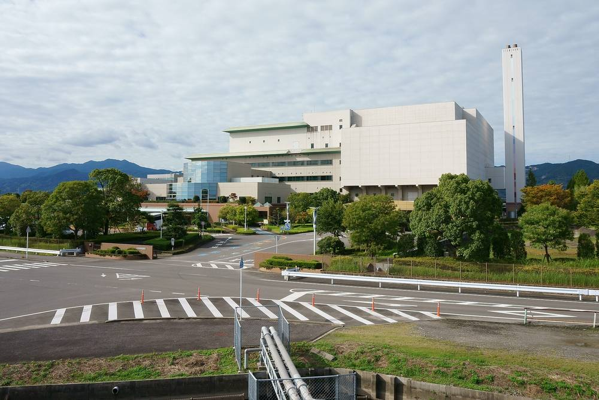

일본 사가시, 시가 52% 출자한 지역 전력회사 세워…청소공장 전기를 공공시설 113곳에 직접 판다

자본금 5,000만 엔 중 시 2,600만 엔·민간 6개사 400만 엔씩…연 약 1만6,000MWh 판매, 시 밖으로 새던 전기요금 지역에 남긴다
일본 규슈 사가현 사가시가 시와 민간 기업이 함께 출자한 제3섹터 지역 전력회사 '사가 순환에너지(さが循環エナジー)'를 세웠다고 9일 발표했다. 새 회사는 시 청소공장에서 쓰레기를 태울 때 생기는 열로 만든 전기를 시내 공공시설에 팔며, 2027년 6월부터 공급을 시작한다. 청소공장은 한 해 약 3만MWh를 발전해 자체 사용분을 뺀 약 1만6,000MWh를 공공시설 113곳에 대 왔지만, 그동안은 시 밖 회사가 판매를 맡아 전기요금 일부가 지역 밖으로 빠져나갔다. 자본금 5,000만 엔 가운데 시가 52%인 2,600만 엔을, 민간 6개사가 400만 엔씩 나머지 48%를 냈고, 시가 정책을 이끌고 기업들은 판매 대행·경영 지원·감사·융자를 나눠 맡는다. 사장은 사업 검토 단계부터 참여한 전 부시장이 맡았으며, 그는 재생에너지 보급 등 시의 탈탄소 정책과 손잡고 지역 문제 해결에 이바지하는 회사로 키우겠다고 밝혔다.
시민에너지 관점
공공시설 113곳이 쓰는 전기 값이 그동안 지역 밖 회사로 흘러갔다는 사실은 우리 지자체에도 그대로 해당한다. 독일의 시영 에너지회사(슈타트베르케)처럼 지자체가 전기를 직접 팔면 요금 수익이 지역 재정과 일자리로 돌아온다는 점을 사가시는 작은 자본금으로 보여 주었다. 다만 쓰레기 소각 전기에 머물면 한계가 분명하니, 공공 지붕 태양광과 시민 출자를 더해 시민이 함께 주인이 되는 회사로 넓혀야 한다. 우리 지자체도 에너지공사 설립을 검토할 때 시민 출자 몫을 처음부터 설계해야 한다.
출처: 사가신문(佐賀新聞) 2026-11-10 樋口絢乃(히구치 아야노) 기자 원문 보기
창간 전 시험 발행 기사입니다.
佐賀市、市が52％出資する地域新電力を設立…清掃工場の電気を公共施設113カ所へ直接販売
資本金5,000万円のうち市が2,600万円・民間6社が400万円ずつ…年約1万6,000MWhを販売、市外に流れていた電気料金を地域に残す
佐賀県佐賀市は9日、市と民間企業が共同出資する第三セクターの地域新電力会社「さが循環エナジー」を設立したと発表した。新会社は市清掃工場でごみを焼却する際の熱で発電した電気を市内の公共施設に販売し、2027年6月に供給を始める。清掃工場は年間約3万MWhを発電し、工場での使用分を除く約1万6,000MWhを公共施設113カ所に供給してきたが、これまでは市外の会社が販売を担い、電気料金の一部が地域の外へ流出していた。資本金5,000万円のうち市が52％にあたる2,600万円を、民間6社が400万円ずつ残り48％を出資し、市が政策面を主導、各社は販売の取り次ぎ・経営支援・監査・融資を分担する。社長には事業の検討段階から関わった前副市長が就任し、再生可能エネルギーの普及など市の脱炭素の取り組みと連携して地域課題の解決に貢献する会社に育てたいと述べた。
市民エネルギーの視点
公共施設113カ所の電気代がこれまで地域外の会社に流れていたという事実は、韓国の自治体にもそのまま当てはまる。ドイツの都市公社（シュタットベルケ）のように自治体が電気を直接売れば、料金収入が地域の財政と雇用に戻ることを、佐賀市は小さな資本金で示した。ただし、ごみ焼却の電気にとどまれば限界は明らかで、公共施設の屋根の太陽光と市民出資を加え、市民もともに持ち主となる会社へと広げるべきだ。韓国の自治体もエネルギー公社の設立を検討する際、市民出資の枠を最初から設計しておくべきだ。
出典: 사가신문(佐賀新聞) 2026-11-10 樋口絢乃(히구치 아야노) 기자 原文を読む
創刊前の試験発行記事です。
日本佐贺市成立市政府出资52%的地方电力公司…将清扫工厂电力直接售给113处公共设施
注册资本5,000万日元中市政府出资2,600万日元、6家民企各400万日元…年售电约1万6,000兆瓦时，把流向市外的电费留在本地
日本九州佐贺县佐贺市9日宣布，已成立由市政府与民间企业共同出资的第三部门地方电力公司"佐贺循环能源（さが循環エナジー）"。新公司将把市清扫工厂焚烧垃圾时利用余热发出的电力出售给市内公共设施，并于2027年6月开始供电。清扫工厂每年发电约3万兆瓦时，扣除自用部分后约1万6,000兆瓦时供应给113处公共设施，但此前售电由市外公司负责，部分电费流出了本地。在5,000万日元注册资本中，市政府出资52%即2,600万日元，6家民企各出资400万日元，合计占48%；市政府主导政策，各企业分担售电代理、经营支持、审计和融资。社长由自项目论证阶段就参与其中的前副市长担任，他表示将与市政府推广可再生能源等脱碳举措联动，把公司培育成为解决地方问题作出贡献的企业。
市民能源视角
113处公共设施的电费长期流向外地公司，这一事实同样适用于韩国的地方政府。佐贺市用不大的资本证明：像德国市政能源公司（Stadtwerke）那样由地方政府直接售电，电费收入就能回流到地方财政和就业。不过只靠垃圾焚烧发电局限明显，应加入公共屋顶光伏和市民出资，扩展为市民共同拥有的公司。韩国地方政府在研究设立能源公社时，也应从一开始就设计好市民出资份额。
来源: 사가신문(佐賀新聞) 2026-11-10 樋口絢乃(히구치 아야노) 기자 查看原文
本文为创刊前试发行文章。
Japan's Saga City Sets Up Local Power Company With 52% Municipal Stake to Sell Waste-Plant Electricity Directly to 113 Public Facilities
Of ¥50 million in capital, the city put in ¥26 million and six private firms ¥4 million each; about 16,000 MWh a year to be sold, keeping power bills that used to leave the city in the local economy
Saga City in Saga Prefecture, Kyushu, announced on 9 November that it has established "Saga Junkan Energy," a third-sector local power company jointly funded by the city and private companies. The new company will sell electricity generated from the heat of burning waste at the city's incineration plant to municipal public facilities, starting supply in June 2027. The plant generates about 30,000 MWh a year and has been supplying about 16,000 MWh, after its own use, to 113 public facilities, but until now an outside company handled the sales, so part of the power bill flowed out of the city. Of the ¥50 million in capital, the city contributed 52%, or ¥26 million, and six private firms ¥4 million each for the remaining 48%; the city leads on policy while the firms share sales agency, management support, auditing and financing. The company is headed by a former deputy mayor who was involved from the planning stage, and he said he wants to grow it into a firm that helps solve local problems in step with the city's decarbonisation efforts, including the spread of renewable energy.
Citizen Energy View
The fact that the power bills of 113 public facilities had been flowing to an outside company applies just as much to Korean local governments. With modest capital, Saga has shown that when a municipality sells electricity directly, as Germany's municipal utilities (Stadtwerke) do, the revenue returns to local finances and jobs. Staying with waste-incineration power alone has clear limits, though, and the company should expand with public-rooftop solar and citizen investment into one that residents co-own. Korean local governments considering their own energy corporations should design a citizen-investment share from the very start.
Source: 사가신문(佐賀新聞) 2026-11-10 樋口絢乃(히구치 아야노) 기자 Read the original
This article was published during the trial period before launch.